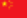

La lista a continuación muestra a los 24 equipos que han estado entre los cuatro mejores de alguna edición del torneo.
Esta tabla muestra los principales resultados de la fase final de cada Campeonato Mundial de League of Legends.
| Edición | Sede final | Final | Semifinalistas | ||||
|---|---|---|---|---|---|---|---|
| Campeón | Resultado | Subcampeón | |||||
| 2019 | París | FunPlus Phoenix | 3 | 0 | G2 Esport | Invictus Gaminf | SK Telecom T1 |
| 2020 | Shanghái | DAMWON Gaming | 3 | 1 | Suning | G2 Esport | Top Esport |
| 2021 | Shenzhen | Por disputarse | |||||
| 2022 | Por decidirse | Por disputarse | |||||